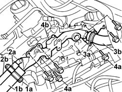
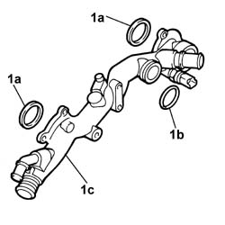

1088D32 <x>COOLANT MANIFOLD IN CYLINDER HEAD - R&R</x>
- Path
- Procedures > 10 ENGINE > 1088 ENGINE COOLING > 1088D COOLANT PIPES AND HOSES > 1088D32 <x>COOLANT MANIFOLD IN CYLINDER HEAD - R&R</x>
- Kind
- repair procedure (removal / refitting; the operation number is the code)
- Applies to
- engines: 3.0 24V V6; all production periods
- Interactive page
- https://sloeber94.github.io/elrnDB-fUlss/en/#/179007190
Applies to: engines: 3.0 24V V6; all production periods
 Removing
Removing
 Refitting
RefittingPosition the vehicle on a lift.
Disconnect the negative battery terminal.
Description | Connector | |
|---|---|---|
. | Battery |
See
Op. 7055B54 UNDER ENGINE PROTECTION/GUARD - R.R.
See
Op. 5010B18 HEATING VENTILATION UNIT AIR INTAKE - R+R
See
Op. 5050B34 WINDSCREEN WIPER ARM/S COMPLETE WITH BLADE - R+R
See
Op. 7210E22 R.R. WINDSCREEN BASE TRIM
See
Op. 1016A42 LEFT HAND CYLINDER HEAD IGNITION COIL COVER - R+R
See
Op. 1048A47 SLEEVE FROM RIGID PIPE TO THROTTLE BODY - R R
See
Op. 1048A10 AIR FILTER ASSEMBLY - R.R.
See
Op. 1088D34 RIGID PIPE/CONNECTOR (ONE) FOR ENGINE COOLING CIRCUIT - R.R.
See
Op. 1088C30 THERMOSTAT UNIT - R+R
1. Loosen collar (1a) and remove pipe (1b) from coolant manifold to radiator.
Description | Code | Function | |
|---|---|---|---|
1a | Caliper | Band opening |
2. Loosen collar (2a) and remove pipe (2b) from engine oil heat exchanger to coolant manifold.
Description | Code | Function | |
|---|---|---|---|
2a | Caliper | Band opening |
3. Loosen collar (3a) and remove pipe (3b) from heater to coolant manifold
Description | Code | Function | |
|---|---|---|---|
3a | Caliper | Band opening |
4. Unscrew (6) bolts (4a) and remove coolant manifold from cylinder heads (4b).

Applies to: engines: 3.0 24V V6; all production periods
Refitting
Removing1. Working at the bench, replace gaskets (1a) and (1b) from coolant manifold (1c).

Applies to: engines: 3.0 24V V6; all production periods
Position coolant manifold on the cylinder heads.
Tighten the (6) bolts to the recommended torque.
Value daNm | Fastening | Component | dia | |
|---|---|---|---|---|
. | 0.8 | Bolts | COOLANT MANIFOLD ON CYLINDER HEADS - R&R |
Connect the pipe from heater to coolant manifold and restore the retaining band.
Description | Code | Function | |
|---|---|---|---|
. | Caliper | Band opening |
Connect the pipe from the engine oil heat exchanger to the coolant manifold and restore the retaining band.
Description | Code | Function | |
|---|---|---|---|
. | Caliper | Band opening |
Connect the pipe from the coolant manifold to the radiator and restore the retaining band.
Description | Code | Function | |
|---|---|---|---|
. | Caliper | Band opening |
See
Op. 1088C30 THERMOSTAT UNIT - R+R
See
Op. 1088D34 RIGID PIPE/CONNECTOR (ONE) FOR ENGINE COOLING CIRCUIT - R.R.
See
Op. 1048A10 AIR FILTER ASSEMBLY - R.R.
See
Op. 1048A47 SLEEVE FROM RIGID PIPE TO THROTTLE BODY - R R
See
Op. 1016A42 LEFT HAND CYLINDER HEAD IGNITION COIL COVER - R+R
See
Op. 7210E22 R.R. WINDSCREEN BASE TRIM
See
Op. 5050B34 WINDSCREEN WIPER ARM/S COMPLETE WITH BLADE - R+R
See
Op. 5010B18 CLIMATE CONTROL UNIT AIR INTAKE - R.R.
See
Op. 7055B54 UNDER ENGINE PROTECTION/GUARD - R.R.
Connect the negative battery terminal.
Description | Connector | |
|---|---|---|
. | Battery |
See
Op. 0010T21 ENGINE COOLANT - CHECK DENSITY AND CHANGE, IF NECESSARY
Remove the vehicle from the lift.
Topics linked from this page (10)
- 0010T21 ENGINE COOLANT - CHECK DENSITY AND CHANGE, IF NECESSARY
- 1016A42 LEFT HAND CYLINDER HEAD IGNITION COIL COVER - R+R
- 1048A10 AIR FILTER ASSEMBLY - R.R.
- 1048A47 SLEEVE FROM RIGID PIPE TO THROTTLE BODY - R R
- 1088D34 RIGID PIPE/CONNECTOR (ONE) FOR ENGINE COOLING CIRCUIT - R.R.
- 1088C30 THERMOSTAT UNIT - R+R
- 5010B18 CLIMATE CONTROL UNIT AIR INTAKE - R.R.
- 5050B34 WINDSCREEN WIPER ARM/S COMPLETE WITH BLADE - R+R
- 7055B54 UNDER-ENGINE GUARD - R R
- 7210E22 WINDSCREEN BASE TRIM